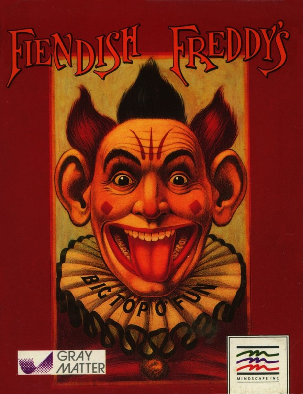
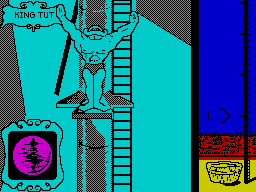

Fiendish Freddy's Big Top of Fun


{kind=link}

| Publisher: | Mindscape |
| Price: | £9.99 / £14.99 |
| Year: | 1990 |
| Source: | CRASH, Issue 76 |

Your circus is in big financial trouble: ten thousand dollars is needed to pay off the mean banker who is putting the squeeze on you. Only completing six death defying acts will save your beloved Big Top. But to put a spanner in the works the banker’s hired Fiendish Freddy to pull every dirty trick to make you fail.
Visit the option screen first and choose players (1-5) or enter the practice mode (recommended for novices). Event one is ‘Phenomenal Feats Of Daring Diving’, or high dive. Clamber up the pole to the first springboard (there are three in all): the idea is to perform the diving pose displayed in the top left hand corner of the screen. Freddy will turn up if you take too long to pose — he uses different sabotage tactics, none of them very nice, for every act. As you complete each dive you climb higher and have further to fall. At the end of an act the Judges give you their score (in the guise of money). The better the performance, the nearer you get to the ten grand you need.

Act two is ‘Genuine Juggling Genius’, with Jeffy-Joe bravely balancing on his unicycle to catch (and juggle) objects thrown to him by his faithful sea lion. ‘Breathtaking Bravado From Hazardous Heights’ (trapeze) sees Finola up in the air trying to swing across the Big Top whilst avoiding the obstacles in her path, and Fiendish Freddy of course. Pin point aim is needed in ‘Deadly And Dangerous Daggers Of Death’ with lovely Knancy Knife strapped to a revolving wheel with a set of balloons: pop the balloons without popping Knancy. End the show with ‘Tense Travel Techniques On Tightrope’, tottering along a high wire avoiding a literally nasty fall. Finally Fernando, the human cannonball, takes the stage: shoot him into the safety net on the opposite side of the ring. Failure sends Fernando to an early grave.
Fiendish Freddy is graphically and sonically one of the best seen for a while. Large cartoony sprites abound whilst a variety of spot effects and jingles assail your ears. The hilarious antics of Freddy lend lasting appeal — you never know quite when he is going to leap out and ruin your act. One slight niggle is the lack of colour, with the main part of the action in monochrome. Despite that Fiendish Freddy’s Big Top O’ Fun is exactly that — fun!
MARK — 93%
This is amazing. I could not believe my eyes when I first played Fiendish Freddy’s Big Top O’ Fun! You could just as easily be watching a cartoon on the telly instead of playing on your Spectrum! The graphics are simply amazing. Big, detailed sprites have been packed into various animated sequences. Backgrounds on all the events are equally astounding and the scrolling is superbly smooth. What more could you ask for? Hundreds of little jingles, tunes and effects are here too, despite the Speccy’s weak point. Each circus event is excellent, packed full of addictiveness and will definitely bring a titter or two when Fiendish Freddy makes things go terribly wrong. Fiendish Freddy’s Big Top O’ Fun is the best game I’ve seen in yonks. Run away with the circus today.
NICK — 94%
RATING
Roll up, roll up for a Smashing day at the circus!!
| Presentation: | 90% |
| Graphics: | 92% |
| Sound: | 88% |
| Playability: | 92% |
| Addictivity: | 93% |
| Overall: | 94% |